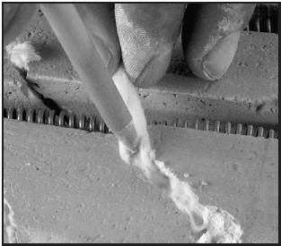
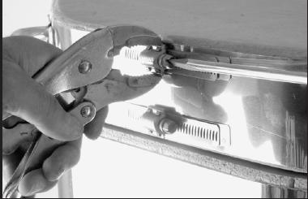
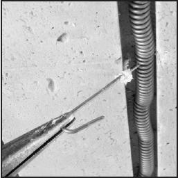
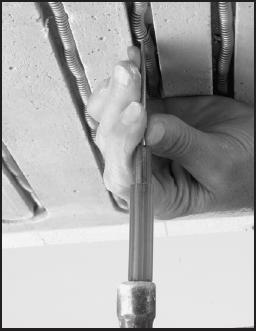
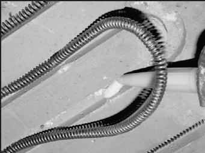
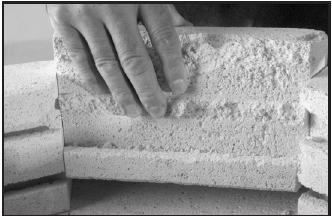

Kuidulla tilkitseminen
Voit myös tilkitä raon keraamisella kuidulla. Se on mahdollista jos rako on yli 3mm.
KApeampaan rakoon ei kuitua saa painettuarikkomatta tiiltä lisää.
1. Kierrä kuitua sormissa kunnes se on lyijykunän paksuisena punoksena.
2. paina punos kittauslastalla tai voiveitsellä saumaan.
Joskus kannen kiristysnauhan kiristäminen hidastaa rakojen leviämistä.

kannen vyön kiristäminen
1. Tartu pihdeillä kirsitimeen estämään sen pyörimistä. Kiristä ruuvilla löysät pois. Tunnet kun ruuvi on tiukemmalla. Älä kiristä liikaa.
Vanhemmissa kansissa vastukset on kiinnitetty hakasilla. Irronneen tai löystyneen hakasen
voit kiinnittää takaisin joko korjauslaastilla tai Pyrolite'llä.
1. Irrota uuni sähköverkosta!

2. Kasta hakasen päät laastiin tai Pyroliteen. Hakasen kiinnitykseen tarvitaan vain hitunen.
3. Työnnö hakanen kanteen vinossa kulmassa. Jos se tulee pystysuoraan kun kansi on kiinni,
se pitää huonoimmin. Hakanen ei saa koskettaa kuin yhteen vastukseen.
Varoitus: [Varmista että hakanen ei ulotu tiilen läpi metallikuoreen], eikä kosketa
mitään toista hakasta.

4. Voit tarvittaessa painaa hakasen syvemmälle tiileen ruuvimeisselin kärjellä.
5. Anna laastin tai Pyroliten kuivua täydellisesti ennen uuniin lämmittämistä.
1. Irrota uuni sähköverkosta!
Huom: Nichrome-vastusta voi varovasti taivuttaa kylmänä, Kanthal-vastusta ei.
(Voit kokeilla magneetilla. Magneetti tarttuu Kanthaliin, Nichromeen ei.)
2. [Jos Kanthal-vastus, kuumenna se kuten aiemmin on mainittu ennen taivutusta.]
Siirrä varovasti roikkuva elementin osa sivuun urasta.
3. Imuroi tai puhdista muuten ura huolellisesti pölyystä.
4. Purista Pyrolite-mato uran pohjalle.


5. Paina elementti uraan. Ei haittaa jos vastus hiukan uppoaa Pyroliteen, kunham
uuniin päin on paljasta vastuslankaa riittävästi näkyvissä.
Jos pätkä vastusta peittyy kokonaan Pyroliteen, se osa voi kuumeta liikaa ja vaurioituu.
6. Anna Pyroliten kuivua täysin ennen uunin kuumennusta.